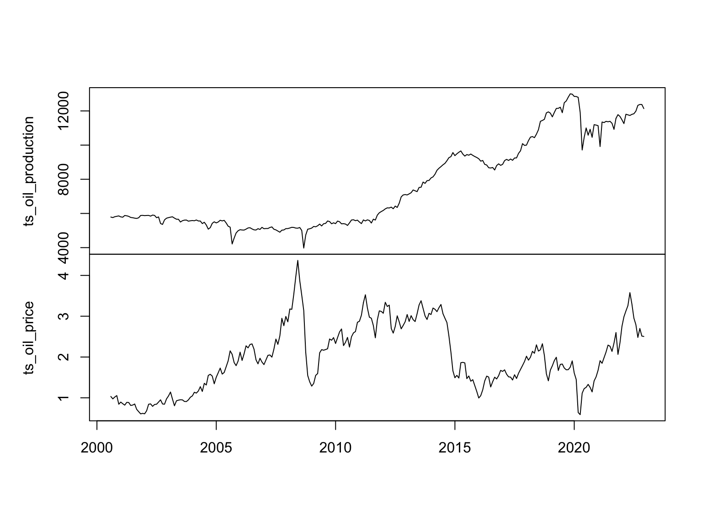
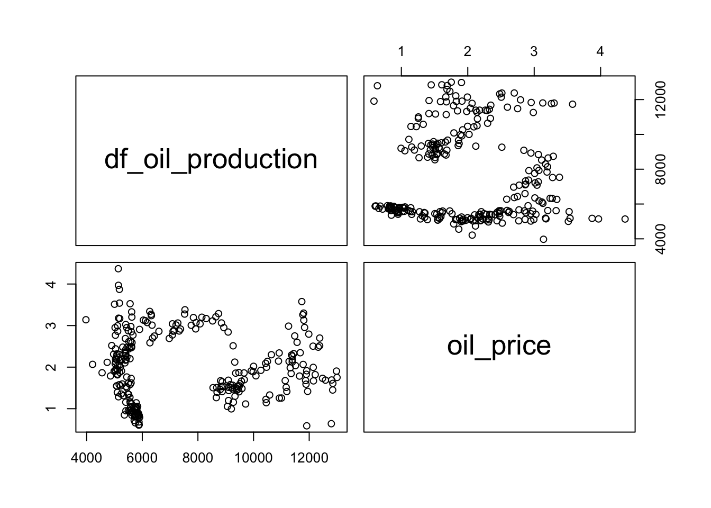
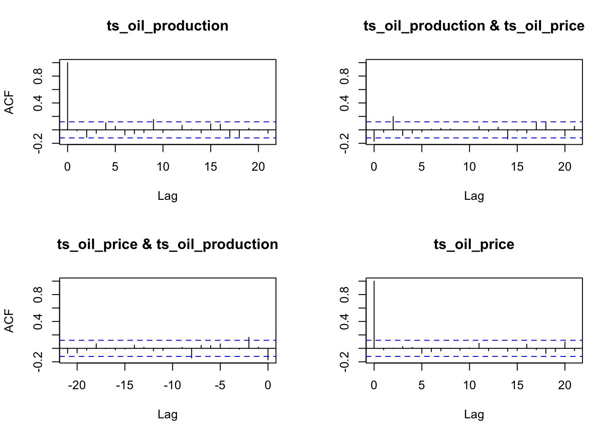
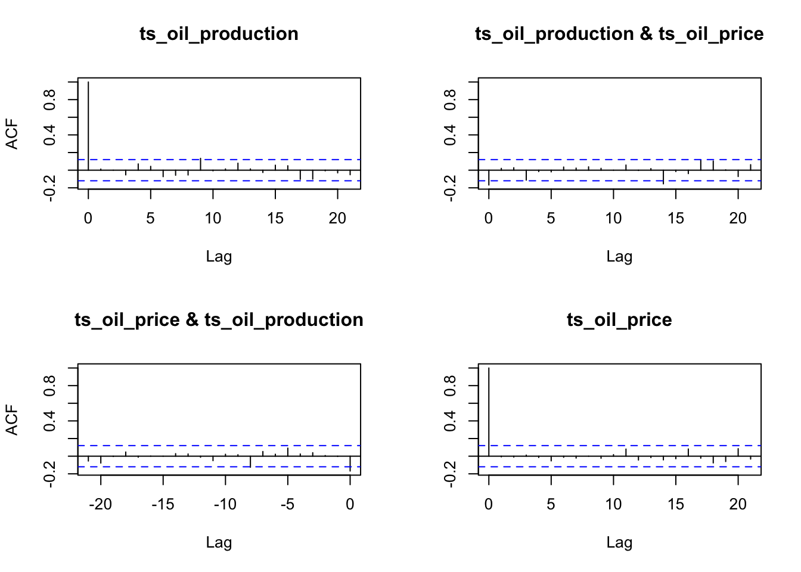
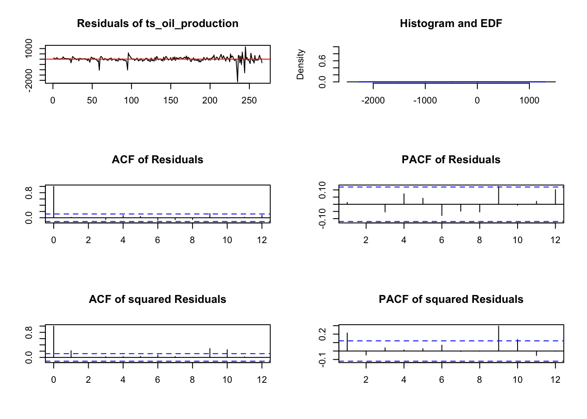
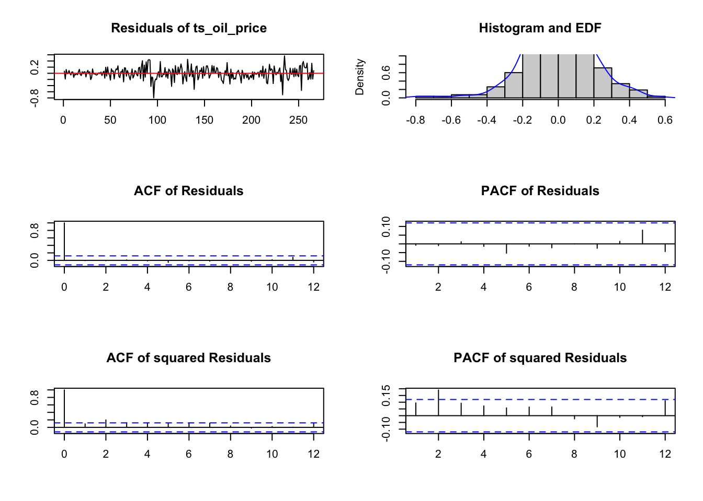
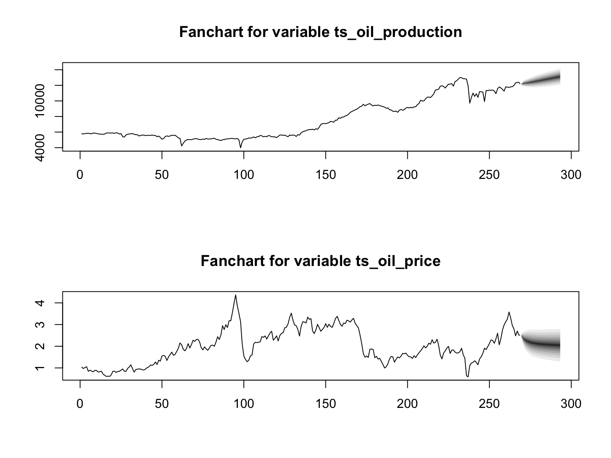

VAR - Oil Price ~ Oil Production
Plot
Throghout this analysis we will create a VAR model to see the interrelation between the oil price and the oil production. The first step is to visualize the time series objects for both variables.
{r}
# Import dataset
df_oil_production <- read_csv('../data/viz_us_oil_production.csv')
# Filter information
df_oil_production <- df_oil_production %>% filter(year(Date) >= 2000 & year(Date) <= 2022)
# Create Date
df_oil_production <- df_oil_production %>%
mutate(date2 = make_date(year(Date), month(Date), 01))
# Import dataset
df_oil_price <- read_csv('../data/df_oil_price_monthly.csv')
# Create Date
df_oil_price <- df_oil_price %>%
mutate(date2 = make_date(year(date), month(date), 01))
# Rename columns
names(df_oil_production) <- c('DATE', 'oil_production', 'date2')
# Rename columns
names(df_oil_price) <- c('DATE', 'oil_price', 'date2')
# Check maximum starting date between datasets
if(min(df_oil_production$date2) >= min(df_oil_price$date2))
{
min_date <- min(df_oil_production$date2)
}else
{
min_date <-min(df_oil_price$date2)
}
# Filter starting date
df_oil_production <- df_oil_production %>% filter(date2 >= min_date)
# Filter starting date
df_oil_price <- df_oil_price %>% filter(date2 >= min_date)
# Create the time series object
ts_oil_production <- ts(df_oil_production$oil_production,star=decimal_date(min_date),frequency = 12)
# Create the time series object
ts_oil_price <- ts(df_oil_price$oil_price,star=decimal_date(min_date),frequency = 12)
# Join time series objects
x = cbind(ts_oil_production, ts_oil_price)
# Plot time series objects
plot.ts(x , main = "", xlab = "")
Correlation Plot
Below we can observe the correlation plot between the two variables. We can observe there is is high concentration of values for low oil production levels, and some correalation for the higher oil production values.
{r}
# Correlation plot
pairs(cbind(df_oil_production=ts_oil_production, oil_price=ts_oil_price))
VARSelect()
We use the function VARselect() to find the suggested models to fit to the time series data. In this case, the models we will test are:
\(p = 2\)
\(p = 3\)
{r}
# Select parameters
VARselect(x, lag.max=10, type="both")$selection
AIC(n) HQ(n) SC(n) FPE(n)
3 3 2 3
$criteria
1 2 3 4 5 6
AIC(n) 7.991526 7.936550 7.896184 7.902688 7.930228 7.943563
HQ(n) 8.035698 8.002807 7.984527 8.013117 8.062743 8.098163
SC(n) 8.101389 8.101345 8.115911 8.177346 8.259819 8.328085
FPE(n) 2955.818525 2797.737039 2687.115164 2704.749394 2780.430551 2817.975230
7 8 9 10
AIC(n) 7.969733 7.989490 7.998394 8.011819
HQ(n) 8.146419 8.188262 8.219252 8.254763
SC(n) 8.409187 8.483875 8.547711 8.616068
FPE(n) 2892.996799 2951.116284 2978.008553 3018.875286Fitting Model 1
After fitting the VAR model for \(p = 2\), we can observe that the estimation results for the equation for the oil production time series, the lag 1 value for oil production time series is the only significant component. On the other hand, the estimation results for the oil price equation, the lag 1 value for oil price, the lag 2 value for oil price, the constant and the trend are significant.
By observing the ACF plots for the residuals we can see that no autocorrelation is left and they all look stationary.
{r}
# Fit model
fitvar1 <- vars::VAR(x, p=2, type="both")
# Summary
summary(fitvar1)
VAR Estimation Results:
=========================
Endogenous variables: ts_oil_production, ts_oil_price
Deterministic variables: both
Sample size: 267
Log Likelihood: -1798.255
Roots of the characteristic polynomial:
0.9695 0.8909 0.2945 0.1152
Call:
vars::VAR(y = x, p = 2, type = "both")
Estimation results for equation ts_oil_production:
==================================================
ts_oil_production = ts_oil_production.l1 + ts_oil_price.l1 + ts_oil_production.l2 + ts_oil_price.l2 + const + trend
Estimate Std. Error t value Pr(>|t|)
ts_oil_production.l1 0.87116 0.06248 13.943 <2e-16 ***
ts_oil_price.l1 42.88394 83.74827 0.512 0.6090
ts_oil_production.l2 0.10973 0.06319 1.737 0.0836 .
ts_oil_price.l2 -19.91844 82.58673 -0.241 0.8096
const 24.30772 105.48940 0.230 0.8179
trend 0.74561 0.63954 1.166 0.2447
---
Signif. codes: 0 '***' 0.001 '**' 0.01 '*' 0.05 '.' 0.1 ' ' 1
Residual standard error: 265.8 on 261 degrees of freedom
Multiple R-Squared: 0.9896, Adjusted R-squared: 0.9894
F-statistic: 4946 on 5 and 261 DF, p-value: < 2.2e-16
Estimation results for equation ts_oil_price:
=============================================
ts_oil_price = ts_oil_production.l1 + ts_oil_price.l1 + ts_oil_production.l2 + ts_oil_price.l2 + const + trend
Estimate Std. Error t value Pr(>|t|)
ts_oil_production.l1 1.974e-05 4.522e-05 0.436 0.662910
ts_oil_price.l1 1.168e+00 6.062e-02 19.275 < 2e-16 ***
ts_oil_production.l2 -6.109e-05 4.574e-05 -1.336 0.182795
ts_oil_price.l2 -2.559e-01 5.978e-02 -4.281 2.61e-05 ***
const 2.920e-01 7.636e-02 3.824 0.000164 ***
trend 1.456e-03 4.629e-04 3.144 0.001858 **
---
Signif. codes: 0 '***' 0.001 '**' 0.01 '*' 0.05 '.' 0.1 ' ' 1
Residual standard error: 0.1924 on 261 degrees of freedom
Multiple R-Squared: 0.9437, Adjusted R-squared: 0.9427
F-statistic: 875.8 on 5 and 261 DF, p-value: < 2.2e-16
Covariance matrix of residuals:
ts_oil_production ts_oil_price
ts_oil_production 70665.473 -8.75817
ts_oil_price -8.758 0.03702
Correlation matrix of residuals:
ts_oil_production ts_oil_price
ts_oil_production 1.0000 -0.1712
ts_oil_price -0.1712 1.0000{r}
# ACF plot
acf(residuals(fitvar1))
Fitting Model 2
We also fitted the VAR model for \(p = 3\), and assess the results. Considering the estimation resultst for the oil production equation, we observe that the lag 1 value for oil production and the lag 3 value for the oil price are significant. While for the estimation results for the oil price equation, the lag 1 value for oil price, the lag 2 value for oil price, the lag 3 value for oil production, the constant and the trend are significant.
After plotting the residuals in the ACF plot, we can observe that the lag values are lower than the previous model. Therefore we can assume that this results are more statitonary.
{r}
# Fit model
fitvar2 = vars::VAR(x, p=3, type="both")
# Summary
summary(fitvar2)
VAR Estimation Results:
=========================
Endogenous variables: ts_oil_production, ts_oil_price
Deterministic variables: both
Sample size: 266
Log Likelihood: -1782.899
Roots of the characteristic polynomial:
0.9781 0.7841 0.6554 0.4344 0.4344 0.3617
Call:
vars::VAR(y = x, p = 3, type = "both")
Estimation results for equation ts_oil_production:
==================================================
ts_oil_production = ts_oil_production.l1 + ts_oil_price.l1 + ts_oil_production.l2 + ts_oil_price.l2 + ts_oil_production.l3 + ts_oil_price.l3 + const + trend
Estimate Std. Error t value Pr(>|t|)
ts_oil_production.l1 0.84984 0.06210 13.685 <2e-16 ***
ts_oil_price.l1 -12.14721 85.63930 -0.142 0.8873
ts_oil_production.l2 0.04845 0.08218 0.590 0.5560
ts_oil_price.l2 247.58901 130.23538 1.901 0.0584 .
ts_oil_production.l3 0.08323 0.06289 1.323 0.1869
ts_oil_price.l3 -217.95504 84.62013 -2.576 0.0106 *
const 26.39862 107.02884 0.247 0.8054
trend 0.78335 0.64665 1.211 0.2269
---
Signif. codes: 0 '***' 0.001 '**' 0.01 '*' 0.05 '.' 0.1 ' ' 1
Residual standard error: 262.2 on 258 degrees of freedom
Multiple R-Squared: 0.9899, Adjusted R-squared: 0.9897
F-statistic: 3625 on 7 and 258 DF, p-value: < 2.2e-16
Estimation results for equation ts_oil_price:
=============================================
ts_oil_price = ts_oil_production.l1 + ts_oil_price.l1 + ts_oil_production.l2 + ts_oil_price.l2 + ts_oil_production.l3 + ts_oil_price.l3 + const + trend
Estimate Std. Error t value Pr(>|t|)
ts_oil_production.l1 3.089e-05 4.504e-05 0.686 0.493435
ts_oil_price.l1 1.150e+00 6.211e-02 18.508 < 2e-16 ***
ts_oil_production.l2 5.357e-05 5.961e-05 0.899 0.369679
ts_oil_price.l2 -1.912e-01 9.446e-02 -2.024 0.044004 *
ts_oil_production.l3 -1.343e-04 4.562e-05 -2.943 0.003541 **
ts_oil_price.l3 -6.063e-02 6.138e-02 -0.988 0.324135
const 3.445e-01 7.763e-02 4.438 1.34e-05 ***
trend 1.722e-03 4.690e-04 3.672 0.000292 ***
---
Signif. codes: 0 '***' 0.001 '**' 0.01 '*' 0.05 '.' 0.1 ' ' 1
Residual standard error: 0.1902 on 258 degrees of freedom
Multiple R-Squared: 0.9454, Adjusted R-squared: 0.9439
F-statistic: 637.7 on 7 and 258 DF, p-value: < 2.2e-16
Covariance matrix of residuals:
ts_oil_production ts_oil_price
ts_oil_production 68773.367 -8.39508
ts_oil_price -8.395 0.03618
Correlation matrix of residuals:
ts_oil_production ts_oil_price
ts_oil_production 1.0000 -0.1683
ts_oil_price -0.1683 1.0000{r}
# ACF Plot
acf(residuals(fitvar2))
Cross Validation
We used cross validation to obtian the best VAR model considering the mean squared errors from the train and test set. The best model obtained is the \(p = 3\)
{r}
n <- 5
len <- nrow(x)[1]/5
best_model <- ""
best_mse <- Inf
for (i in 1:n){
st <- (i-1)*len+1
end <- i*len
xtrain <- x[-(st:end),]
xtest <- x[st:end,]
var_select <- VARselect(xtrain, lag.max = 10, type = "both")
var_select_lag <- var_select$selection[1]
model <- VAR(xtrain, p = var_select_lag, type = "both")
test_row <- nrow(xtest)
pred <- predict(model, n.ahead = test_row)
pred_var <- pred$fcst$ts_oil_price[,1]
pred_mse <- mean((pred_var - xtest[,"ts_oil_price"])^2)
if (pred_mse < best_mse){
best_model <- model
best_mse <- pred_mse
}
}
print(best_model)
VAR Estimation Results:
=======================
Estimated coefficients for equation ts_oil_production:
======================================================
Call:
ts_oil_production = ts_oil_production.l1 + ts_oil_price.l1 + ts_oil_production.l2 + ts_oil_price.l2 + ts_oil_production.l3 + ts_oil_price.l3 + const + trend
ts_oil_production.l1 ts_oil_price.l1 ts_oil_production.l2
0.87636709 -17.91721175 0.02618086
ts_oil_price.l2 ts_oil_production.l3 ts_oil_price.l3
431.68120168 0.06713893 -402.62982283
const trend
94.06152820 1.44005288
Estimated coefficients for equation ts_oil_price:
=================================================
Call:
ts_oil_price = ts_oil_production.l1 + ts_oil_price.l1 + ts_oil_production.l2 + ts_oil_price.l2 + ts_oil_production.l3 + ts_oil_price.l3 + const + trend
ts_oil_production.l1 ts_oil_price.l1 ts_oil_production.l2
-1.055158e-05 1.125827e+00 9.411954e-05
ts_oil_price.l2 ts_oil_production.l3 ts_oil_price.l3
-9.428803e-02 -1.309282e-04 -1.555282e-01
const trend
3.304240e-01 2.415505e-03 Serial Test
In order to check the residuals ACF and PACF plots, we used the serial test for the best model selected, which in this case is the VAR model with \(p = 3\). We can observe that the residuals for both variables being analyzed do not present autocorrelation between the lag values for the confidence bands defined.
{r}
selected_model <- 3
var_selected_model <- VAR(x, p = selected_model, type = "both")
gu.serial <- serial.test(var_selected_model, lags.pt = 12, type = "PT.asymptotic")
gu.serial
Portmanteau Test (asymptotic)
data: Residuals of VAR object var_selected_model
Chi-squared = 31.935, df = 36, p-value = 0.6624{r}
plot(gu.serial, names = "ts_oil_production")
{r}
plot(gu.serial, names = "ts_oil_price")
Forecast Plot
{r}
var_model <- VAR(x, p = selected_model, type = "both")
fit.pr <- predict(var_model, n.ahead = 24, ci = 0.95)
# Path to save plot
# file_path <- "../images/7_VAR_oil.png"
# Use ggsave to save the plot as a PNG image
# ggsave(fanchart(fit.pr), filename = file_path, width = 10, height = 5)
# Show plot
fanchart(fit.pr)